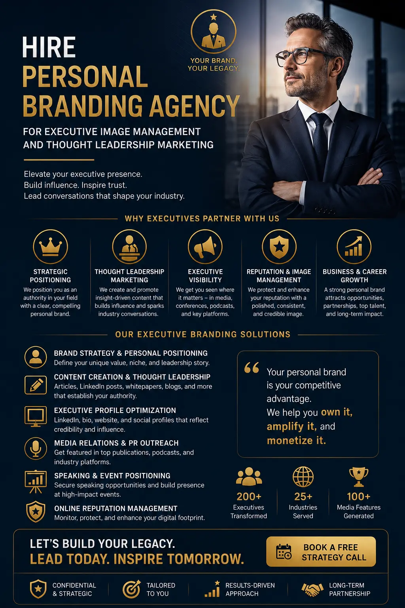
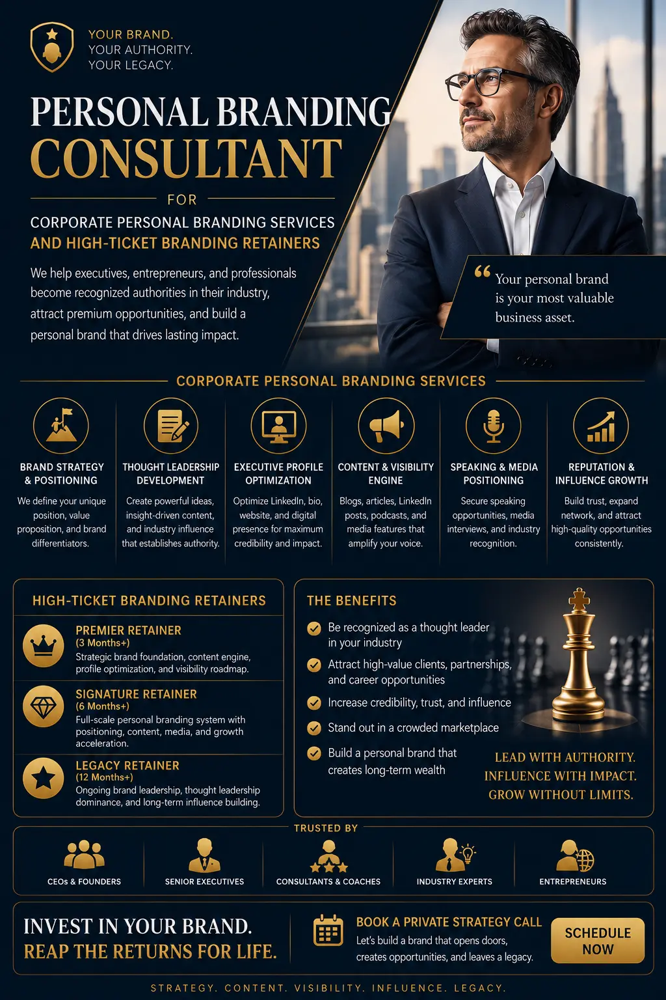

What to Look For When Hiring a Premium Personal Branding Consultant
The Executive Branding Decision That Most Founders and CEOs Get Wrong
Personal branding is no longer a discretionary investment for senior executives. In 2026, it is a commercial necessity. The founder whose LinkedIn profile attracts inbound partnership enquiries, the CEO whose thought leadership content generates speaking invitations, and the executive whose professional visibility accelerates board-level appointments — these outcomes are not accidental. They are the result of working with a skilled Personal Branding Consultant who understands how to architect an executive's professional identity for measurable commercial return.
Yet the decision to hire personal branding agency support is one that many executives approach without clear evaluation criteria — and the consequences of choosing poorly are significant. An ineffective branding engagement wastes budget, produces content that dilutes rather than strengthens professional positioning, and creates an opportunity cost that is often invisible until a competitor's brand overtakes theirs in the same market. The difference between a premium Personal Branding Consultant and a generic marketing provider is not price — it is strategic depth, execution quality, and the ability to produce outcomes that directly impact commercial performance.
This guide provides a structured framework for evaluating and selecting a Personal Branding Consultant, understanding executive image management cost structures, distinguishing between corporate personal branding services and generic content support, and ensuring that high-ticket branding retainers deliver genuine return on investment.
What Makes a Personal Branding Consultant Premium Versus Generic
The market for corporate personal branding services has expanded rapidly, and with that expansion has come a wide range of quality levels — from freelancers offering LinkedIn post-writing to full-service agencies delivering comprehensive executive brand management. Understanding the distinction is critical before you hire personal branding agency support, because the wrong choice produces activity without outcomes.
A premium Personal Branding Consultant operates fundamentally differently from a generic content creator or social media manager. The differences are structural, not merely qualitative:
Strategic Brand Architecture
A premium consultant begins with brand strategy — not content creation. They define the executive's unique positioning, identify the specific audiences whose perception matters commercially, and develop a brand narrative that differentiates the executive from every other leader in their industry. This strategic foundation determines every piece of content, every platform decision, and every visual asset that follows. Generic providers skip this step and move directly to posting content without strategic direction.
Integrated Service Delivery
The best personal brand coach near me search often returns individual practitioners. But premium executive branding requires integrated capabilities — content strategy, professional writing, visual identity design, photography direction, video production, and digital platform management. A premium Personal Branding Consultant either possesses or orchestrates all of these capabilities as a unified system, not as disconnected services purchased separately.
Executive-Level Communication Standards
Content produced for a CEO, founder, or senior executive must reflect the intellectual depth and communication sophistication that their professional position demands. Premium executive profile managers produce content that reads as though the executive wrote it — because they invest the time to understand the executive's thinking, vocabulary, and professional perspective. Generic providers produce content that reads as marketing copy, which undermines rather than builds executive credibility.
Measurable Commercial Outcomes
Premium corporate personal branding services are measured against commercial KPIs — inbound business enquiries, speaking engagement invitations, media coverage, partnership opportunities, and talent attraction. Generic providers measure vanity metrics: follower counts, post impressions, and engagement rates. The distinction matters because an executive whose personal brand generates three high-value partnership opportunities per quarter has a measurable return on investment, regardless of follower count.

Understanding Executive Image Management Cost and Pricing Structures
Executive image management cost is one of the first questions executives ask — and one of the most poorly understood aspects of the personal branding investment. The pricing landscape for corporate personal branding services in India ranges from INR 25,000 per month for basic content support to INR 10,00,000+ per month for comprehensive executive brand management with full-service delivery teams.
Understanding thought leadership marketing price structures requires recognising that personal branding is not a commodity service — it is a strategic engagement whose value is determined by the outcomes it produces, not the volume of content it delivers. The pricing tiers in the Indian market typically follow this structure:
- Entry-level content support (INR 25,000 to 75,000 per month). Basic LinkedIn content writing, profile optimisation, and posting schedule management. Suitable for mid-level professionals building initial visibility, but insufficient for senior executives who require strategic positioning and integrated brand management. At this level, you are purchasing content production, not strategic branding.
- Mid-tier brand management (INR 1,00,000 to 3,00,000 per month). Comprehensive content strategy, regular thought leadership content production, visual asset creation, LinkedIn and social platform management, and monthly performance reporting. This tier typically includes a dedicated content strategist and writer, with photography and video production available as additional project fees. Most executives who are serious about executive image management cost efficiency find this tier delivers the best balance of strategic depth and production quality.
- Premium full-service retainers (INR 3,00,000 to 10,00,000+ per month). Complete executive brand ecosystem management including strategic advisory, content production across all platforms, media relations and placement, speaking engagement positioning, professional photography and video production, reputation monitoring, and crisis communication preparedness. These high-ticket branding retainers include a dedicated multi-person team and regular strategic review sessions with the executive.
The critical question when evaluating thought leadership marketing price is not "how much does it cost?" but "what is the commercial value of the outcomes this investment will produce?" A single board appointment, a keynote speaking engagement at a major industry conference, or a strategic partnership opportunity generated through effective personal branding often exceeds the entire annual investment in corporate personal branding services.
Red Flags When Evaluating a Personal Branding Consultant
The decision to hire personal branding agency support should be informed by clear warning signs that distinguish effective consultants from those who will consume budget without producing outcomes. The most common red flags in corporate personal branding services:
- No strategic framework before content creation. Any Personal Branding Consultant who begins producing content before completing a comprehensive brand strategy — including positioning analysis, audience mapping, competitive differentiation, and content architecture — is operating without the strategic foundation that determines whether content will produce commercial outcomes or simply fill a posting schedule.
- Vanity metric focus. If the consultant's reporting emphasises follower growth, post impressions, and engagement rates without connecting these metrics to commercial outcomes — inbound enquiries, speaking invitations, media coverage, business development opportunities — the engagement is measuring activity rather than impact. Executive profile managers who deliver genuine value report on business outcomes, not social media statistics.
- Template-driven content. Premium executive content must be original, strategically positioned, and authentically voice-matched to the specific executive. If the content could have been written for any executive in any industry with minor edits, the consultant is using template-based production that will not differentiate the executive from competitors whose consultants use the same templates.
- No documented case studies with measurable results. A credible Personal Branding Consultant should be able to demonstrate specific, measurable outcomes from previous executive client engagements — not testimonials about the process being enjoyable, but documented evidence of increased inbound opportunities, media placements, speaking engagements, or business development outcomes directly attributable to the branding programme.
- Single-person delivery for executive-level scope. Comprehensive executive personal branding requires multiple disciplines — strategy, content, design, photography, video, platform management, and analytics. A single individual cannot deliver all of these at the quality level that executive branding demands. Premium high-ticket branding retainers include a dedicated team, not a single practitioner attempting to deliver every capability alone.
The Distinction Between a Personal Branding Consultant and a Personal Development Coach
Executives frequently confuse the roles of a Personal Branding Consultant and a personal development coach for executives, and the confusion leads to misaligned expectations and wasted investment. The two disciplines serve fundamentally different functions in an executive's professional development:
A Personal Branding Consultant focuses on the external perception and professional positioning of the executive — how they are seen, recognised, and valued by their industry, their market, and their prospective clients or partners. Their work is commercially oriented, producing measurable outcomes in visibility, authority, inbound opportunity generation, and business development acceleration. The Personal Branding Consultant operates on the executive's public-facing identity, not their internal capabilities.
A personal development coach for executives, by contrast, focuses on the internal capabilities and personal growth of the executive — leadership effectiveness, communication skills, emotional intelligence, decision-making frameworks, and strategic thinking. The personal development coach for executives operates on the executive's internal performance, not their external visibility.
The distinction matters commercially. An executive who needs to attract board-level opportunities, generate inbound business leads, and build industry authority needs a Personal Branding Consultant. An executive who needs to improve their leadership effectiveness, team management, and strategic decision-making needs a personal development coach for executives. The most effective executive development programmes integrate both disciplines — building the internal capabilities and the external visibility simultaneously.
What Premium Corporate Personal Branding Services Should Actually Deliver
When you hire personal branding agency support at the premium level, the deliverable expectations should be explicit, measurable, and directly connected to commercial outcomes. The core deliverables of premium corporate personal branding services:
Brand Strategy and Positioning
- Comprehensive brand audit of the executive's current professional presence across all platforms
- Competitive positioning analysis within the executive's specific industry and market
- Brand narrative development that articulates the executive's unique professional identity
- Content architecture defining topics, themes, formats, and publishing cadence
Content Production and Distribution
- Thought leadership articles, LinkedIn posts, and long-form content written in the executive's authentic voice
- Professional photography and video production for visual content assets
- Platform-specific content optimisation for LinkedIn, industry publications, and personal website
- Consistent publishing schedule maintained across all active platforms
Performance Measurement and Strategic Review
- Monthly reporting against defined commercial KPIs — not vanity metrics
- Quarterly strategic review sessions to assess brand trajectory and adjust positioning
- Inbound opportunity tracking connecting brand activity to business development outcomes
- Competitive visibility monitoring to ensure the executive maintains positioning advantage

Evaluating High-Ticket Branding Retainers for Genuine ROI
High-ticket branding retainers represent a significant investment — typically INR 3,00,000 to 10,00,000+ per month — and the evaluation criteria should reflect the commercial stakes involved. The framework for assessing whether high-ticket branding retainers will deliver genuine return on investment:
- Clear strategic framework with defined milestones. The retainer should begin with a documented brand strategy that includes specific quarterly milestones — not vague promises of increased visibility, but measurable targets for inbound enquiries, media placements, speaking engagements, or other commercially relevant outcomes.
- Specific deliverable commitments. The retainer agreement should specify exact content volumes, publishing schedules, platform management scope, visual asset production frequency, and reporting cadence. Ambiguity in deliverables is the most common source of dissatisfaction in high-ticket branding retainers.
- Documented results from comparable clients. The Personal Branding Consultant or agency should provide case studies from previous executive clients at a comparable seniority level and in comparable industries — with specific, measurable outcomes documented, not just client testimonials.
- Dedicated multi-person team. Premium retainers should include named team members with defined roles — a lead strategist, content writer, visual designer, platform manager, and account director at minimum. Executive-level branding requires a team with diverse expertise, not a single consultant attempting to deliver every function.
- Regular strategic review sessions. The retainer should include structured review sessions — monthly at minimum — where performance is measured against objectives, strategy is adjusted based on results, and the executive provides input on upcoming priorities and positioning opportunities.
Why Integrated Services Matter More Than Individual Capabilities
The most common mistake executives make when searching for the best personal brand coach near me is evaluating individual capabilities rather than integrated service delivery. A brilliant content strategist who cannot produce professional visual assets, a skilled photographer who cannot develop brand strategy, or an effective executive profile managers team that cannot produce original thought leadership content — each of these delivers a fragment of what executive personal branding requires.
Premium corporate personal branding services integrate all essential capabilities into a unified delivery system: brand strategy that informs content creation, content creation that is supported by professional visual production, visual production that is distributed through strategic platform management, and platform management that is measured against commercial KPIs and continuously optimised through strategic review.
When you hire personal branding agency support, the question is not whether they can write good LinkedIn posts or take professional photographs. The question is whether they can orchestrate all of these capabilities into a coherent brand system that produces compounding commercial value over time — building the executive's professional authority with every piece of content published, every media appearance secured, and every speaking engagement delivered.
Conclusion
The decision to invest in a Personal Branding Consultant is a strategic business decision — not a marketing expense. The executive whose personal brand generates inbound partnership opportunities, attracts top-tier talent, opens doors to advisory board positions, and positions them as the recognised authority in their industry has a measurable competitive advantage that compounds over time.
Understanding executive image management cost structures, evaluating thought leadership marketing price against commercial outcomes rather than content volume, distinguishing between a Personal Branding Consultant and a personal development coach for executives, and applying rigorous evaluation criteria to high-ticket branding retainers — these are the analytical steps that ensure the investment produces genuine return.
The executives who build the strongest professional brands in 2026 are not those who spend the most on branding. They are those who choose the right Personal Branding Consultant — one who combines strategic depth, execution excellence, and integrated corporate personal branding services into a programme that delivers measurable commercial outcomes for the executive's career and business.
Key Topics
Ready to Hire a Personal Branding Consultant Who Delivers Measurable Executive Authority?
At The PhD Ads in Madurai, we provide premium corporate personal branding services for founders, CEOs, and senior executives — from strategic brand architecture and thought leadership content production to professional visual identity assets and comprehensive executive brand management. Every engagement is built on a clear strategic framework with measurable commercial outcomes, not vanity metrics.
Email: team@e2o.in